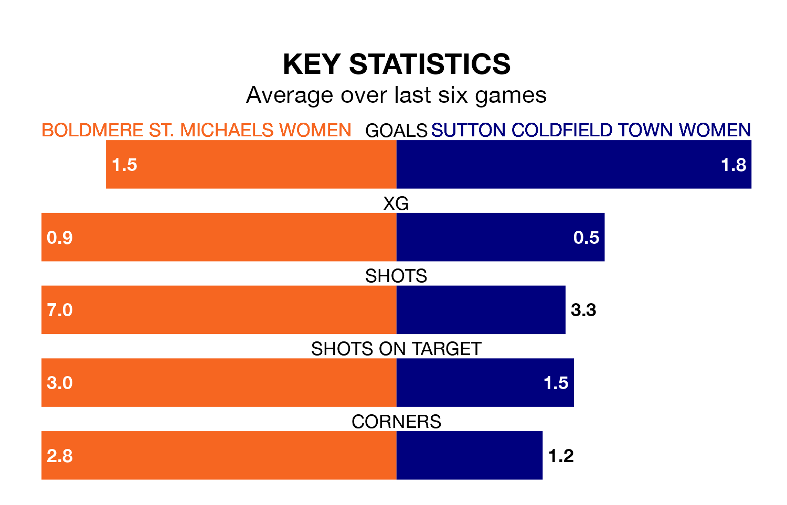

Sutton Coldfield Town Women travel to Boldmere St. Michaels Women on early Sunday in the Women's National League Division One Midlands.
The visitors come into the game on the back of a win in their last match, having beaten Leek Town Women 2-1 away.
Boldmere St. Michaels also won their last match, 4-1 against Solihull Moors Women.
With 32 goals in 21 games so far this season, Sutton Coldfield Town are scoring at below the league average rate with 1.5 goals per game. But they are conceding fewer than average too, letting in 36 goals at a rate of 1.7 per game.
Boldmere St. Michaels, meanwhile, are average scorers, with 1.8 goals per game. They have conceded 1.2 goals per game.
The hosts are in mixed form in the Women's National League Division One Midlands, with two wins and two draws from their last six games.
With a win and two draws over that period, the away side's form is worse – they have taken five points from 18, compared to Boldmere St. Michaels's eight.
Boldmere St. Michaels are fourth in the table after 21 games, of which they have won 13 and drawn two, earning 41 points.
Sutton Coldfield Town are three places behind the home team in seventh, with six wins and five draws putting them on 23 points.
Updated: 12:00 (UTC), 02/05/24